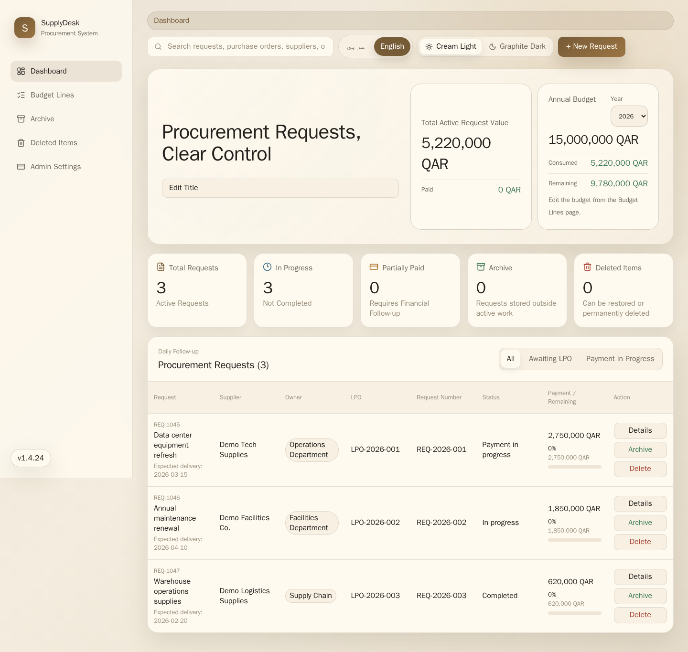
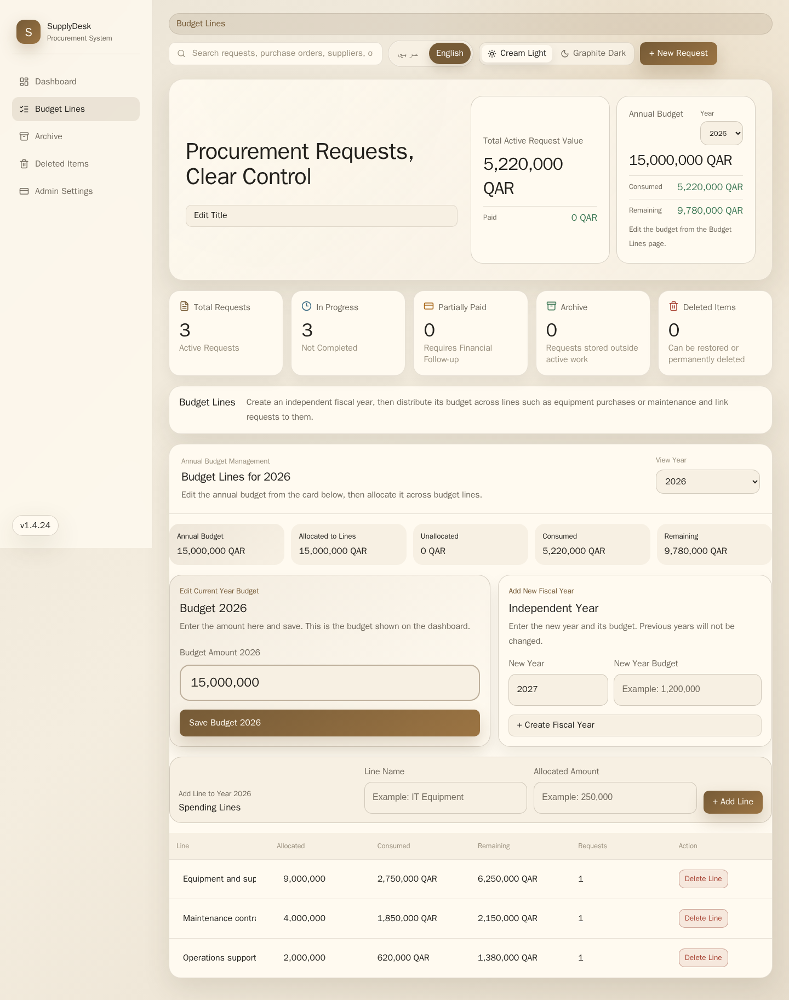
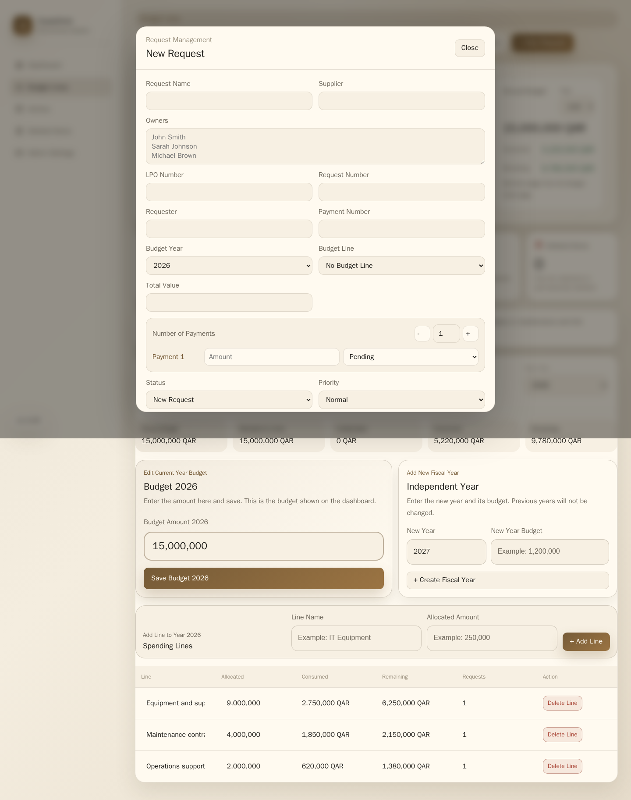
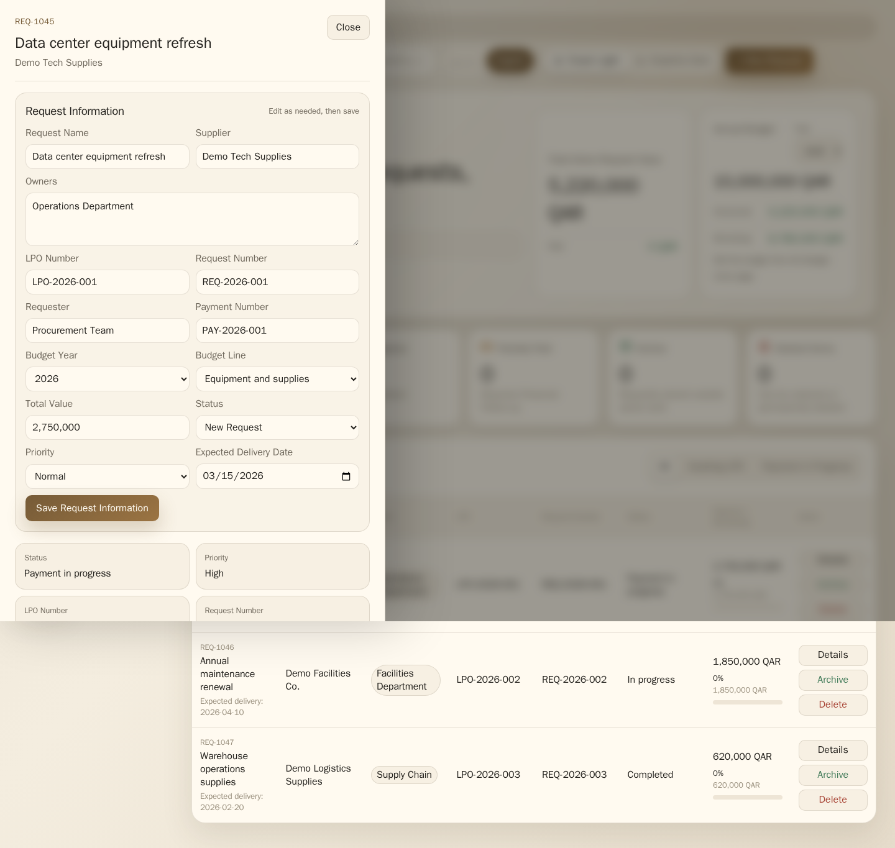

Request tracking
Follow purchase requests from intake to completion with owner, supplier, expected delivery, priority, status, and LPO fields.
Procurement operations, one clear dashboard
SupplyDesk is a bilingual web application for internal procurement teams. It combines purchase requests, payment progress, annual budget lines, archive workflows, and supplier records in a clean browser-based system.

What it covers
Follow purchase requests from intake to completion with owner, supplier, expected delivery, priority, status, and LPO fields.
Split payments into rows, monitor paid and remaining amounts, and quickly identify partially paid requests.
Manage annual budget years and lines, then link requests to the right allocation for live consumed and remaining totals.
Archive old requests, restore deleted items, and keep supplier records and suggestions reusable.
Screenshots



Quick start
The default `docker-compose.yml` starts the published SupplyDesk image and PostgreSQL automatically. No separate database install is needed for production Docker installs.
curl -fsSLO https://raw.githubusercontent.com/wesker10/SupplyDesk/main/docker-compose.yml
curl -fsSLO https://raw.githubusercontent.com/wesker10/SupplyDesk/main/.env.example
cp .env.example .env
docker compose up -dOpen http://localhost:3000
Install options
Recommended for most users. Uses the published image from GitHub Container Registry and starts PostgreSQL automatically.
git clone https://github.com/wesker10/SupplyDesk.git
cd SupplyDesk
cp .env.example .env
docker compose up -dBuilds the app image locally from source. Use this when changing code or testing a local build.
git clone https://github.com/wesker10/SupplyDesk.git
cd SupplyDesk
cp .env.example .env
docker compose -f docker-compose.dev.yml up -d --buildRuns the app directly with Node.js. PostgreSQL is optional for local testing; without PostgreSQL settings, the app uses SQLite fallback.
npm install
npm test
npm run build
npm start